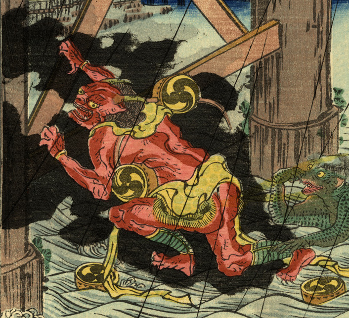

橋の下に落ち、河童に引きずり込まれそうになる雷神。赤く、２本の角が生えている。雷太鼓は落下の衝撃で壊れ、散らばっている。
著作者：廣景／出典：親書誌：U426_nichibunken_0333：両國の夕立；リョウゴク ノ ユウダチ／日付：2014／資源識別子：U426_nichibunken_0333_0001_0000
Copyright (c)2010- International Research Center for Japanese Studies, Kyoto, Japan. All rights reserved.